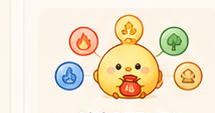

표를 눌러서 자세히 알아보세요
사주 원국 · 1996년 3월 14일 오후 3:30
년주
丙
子
병자
월주
辛
卯
신묘
일주
甲
子
갑자
시주
庚
午
경오

목 · 성장
화 · 열정
토 · 안정
금 · 결실
수 · 지혜
대운 (10년 단위)
3세
壬寅
13세
癸卯
23세
甲辰
33세
乙巳
43세
丙午
세운 (연 단위)
2024
甲辰
2025
乙巳
2026
丙午
2027
丁未